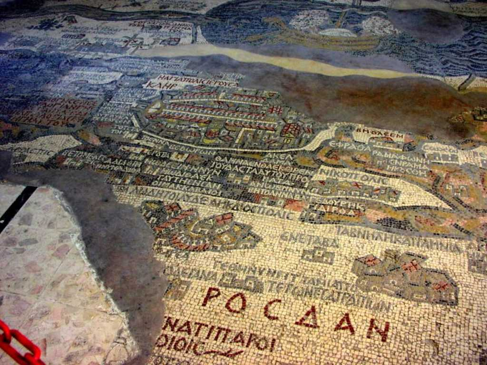
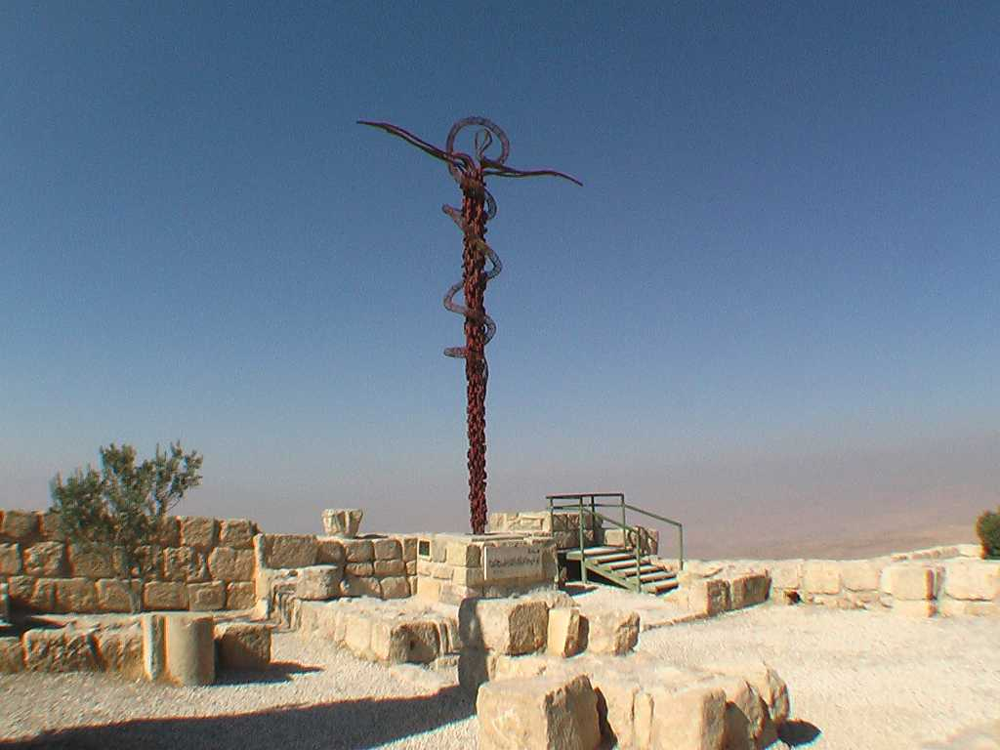

Madaba mozaic
聖ジョージ教会の床に残された６世紀のモザイク画で有名 ヨルダン川 パレスチナ エルサレム ベツレヘム等が天然岩石により描かれている

Mt. Nebo
出エジプトを果たした預言者モーゼ終焉の地 山頂からは約束の地カナン(ヨルダン川 死海 パレスチナ)が一望できる ヨルダン川流域は緑が豊かだが死海を含め周辺は過酷な環境にありこの地を巡る争いが昔から絶えないのが理解できる